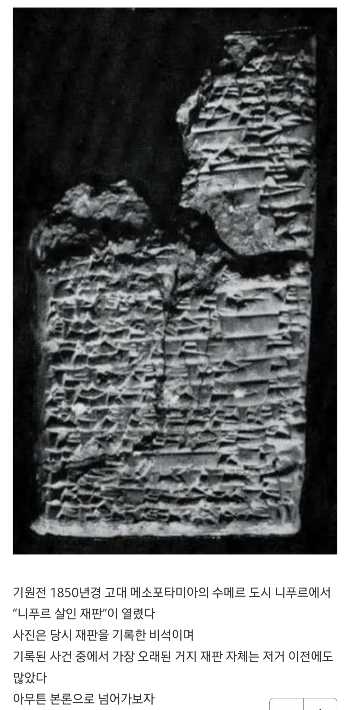
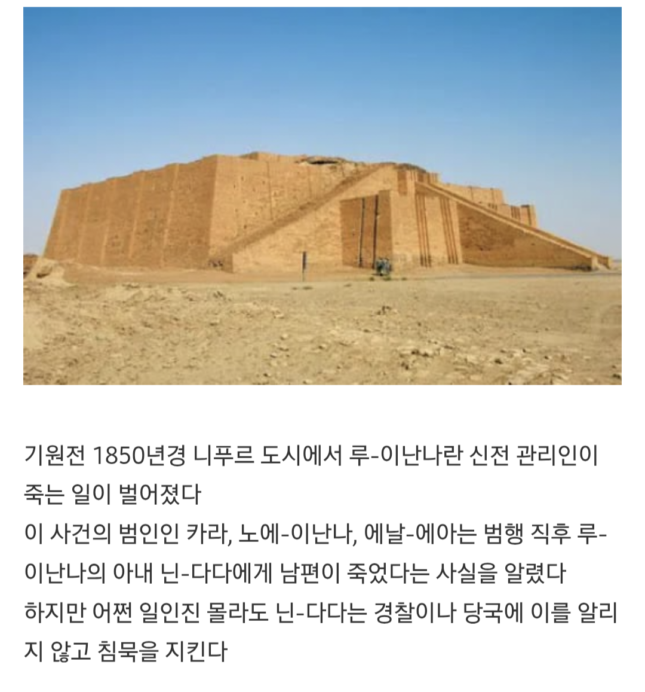
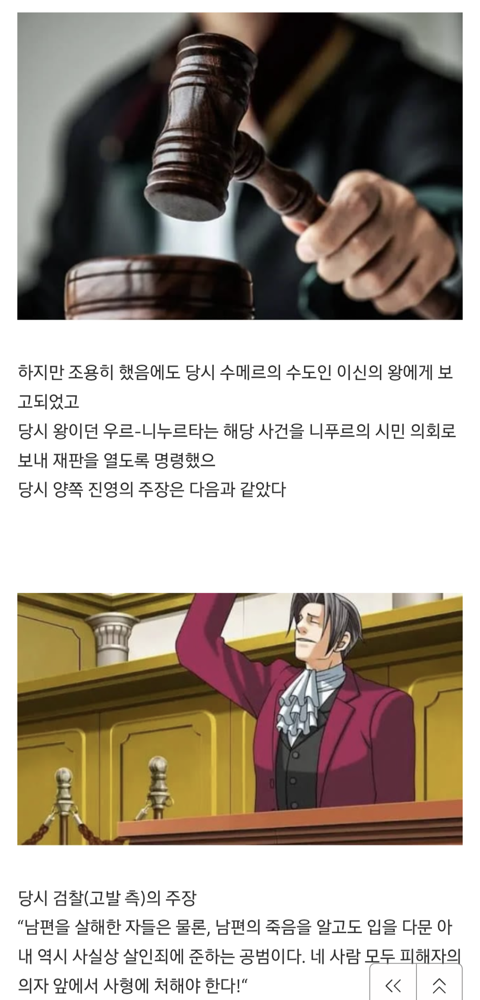
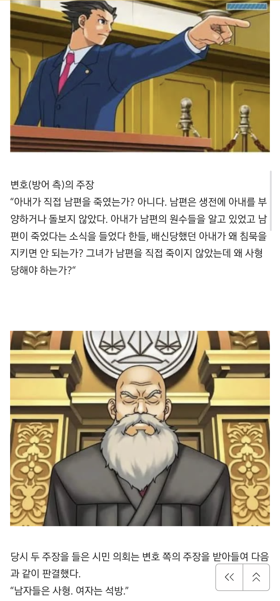
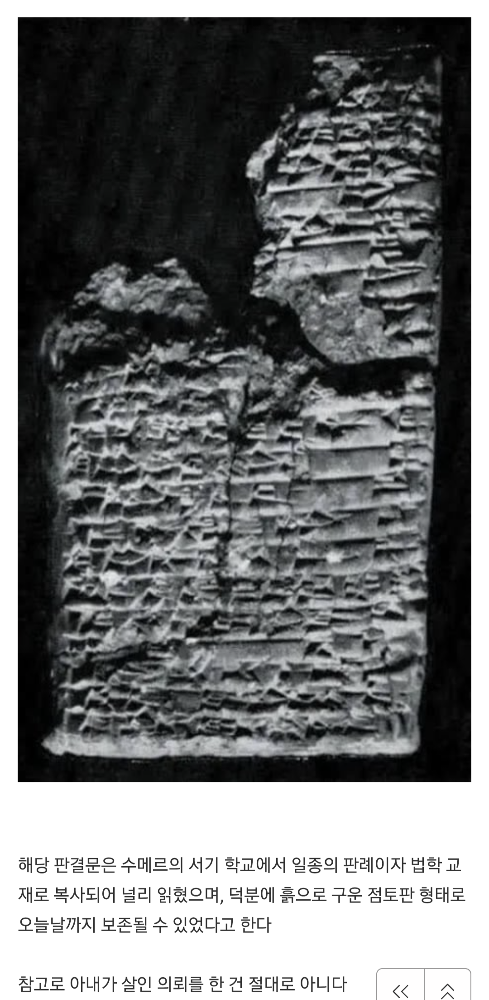

예뻣나봐
ㄹㅇ 아내의 외모가 예쁜데 남편은 아내를 버리다시피하고 있다보니 남자들은 그 여성 추종하는 사람들이었나봄
법이라는게 제대로 작동하면 천년전에도 현대 시점에서 봐도 올바른 판결이 나오는법인듯
개새끼 잘죽었다 한거네
저래도에아나시르이미친새끼는끝까지기소당한기록안나옴
인류최고의사기꾼 에아나시르
그저 ^에아는나의수호자^
스윗굽남이 아니라고
이 영화와는 달리 완전 범죄인지도?
https://www.youtube.com/watch?v=snXzIl4S9Dc
기원전 1800년전 사법체계. ㄷㄷ
절대 아닌걸 어케앎?
저게 글씨라고?
아니 걍 남편 지인이 아내에게 죽었다고 알린 줄 알았는데 다시 읽어보니 범인들이었네 ㅋㅋㅋ
범인들은 왜 자기들이 죽였다고 아내에게 알린겨